Firefox3 基础教程
作者：TeliuTe 来源：基础教程网
一、下载安装 返回目录 下一课Firefox是一款免费的网页浏览器，操作简便、安全、速度快，如果经常浏览文本网页或搜寻资料，使用它是比较放心的；
1、下载
1）推荐在一些大的网站里下载，或者在Mozilla官方网站中下载，注意找到正确的下载链接；
华军下载(Windows版)：http://www.onlinedown.net/soft/3600.htm
官方下载：http://www.mozilla.org.cn/
2）下载后若是压缩包先解压，解压后得到一个安装程序；
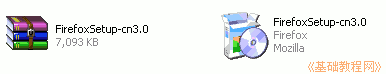 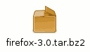
2、Ubuntu下安装
1）在Ubuntu里默认已经自动安装了，只要保持更新即可；
2）如果要自己安装，可以把下载的安装包解压缩到一个文件夹，然后运行里面的firefox即可；
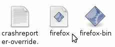
3）第一次运行会出来一个许可协议，点接受即可；
3、Windows下安装
1）双击运行安装程序，首先出现一个提取对话框，一般很快完成；
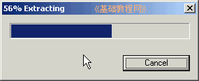
2）进入安装向导，提示先关闭其他的窗口，这儿点“下一步”继续；
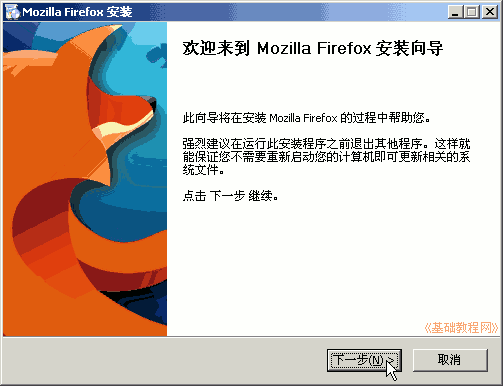
3）在出来的许可协议中，先点“我接受”，然后点“下一步”继续；
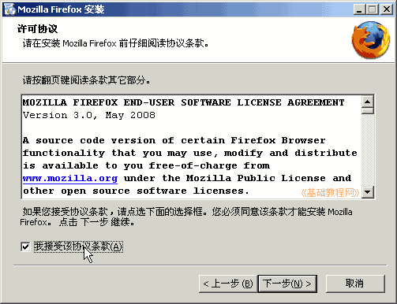
4）接下来的安装选项中，先选择“自定义”，然后点“下一步”继续；
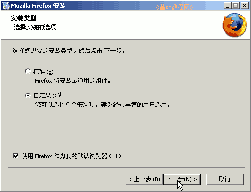
这儿下边有一个“默认浏览器”选项，选中后，当你打开一个网页文件时自动启动Firefox；
5）然后出来安装位置，一般不用设置，点“下一步”继续；
也可以选择安装到其他盘，比如把最前面的字母 C 改成 D ，就可以安装到D盘；
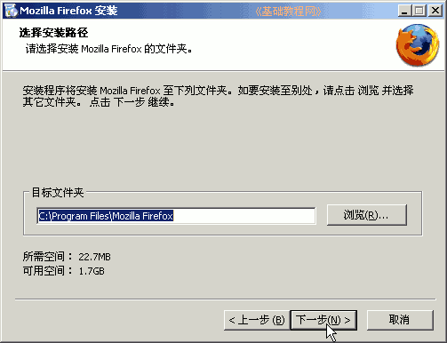
6）接下来是快捷方式，注意打勾的地方，一般要特别小心，这儿保留第一个即可，点“下一步”继续；
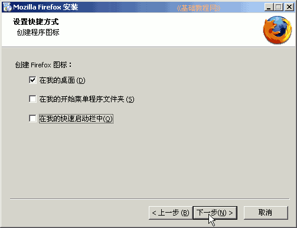
7）然后出来一个总结面板，提示安装的位置和是否设为默认，点“安装”继续；
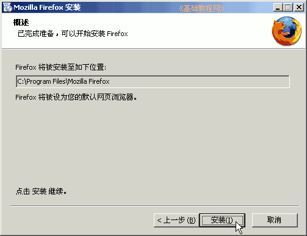
8）开始安装文件，装完后提示“立即运行”，点“结束”；
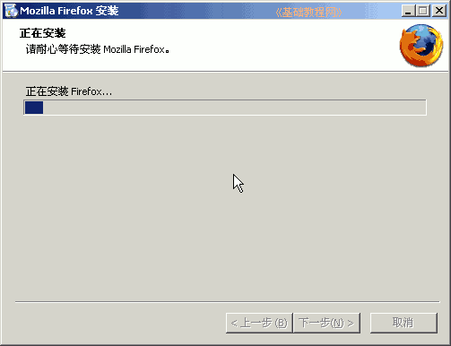 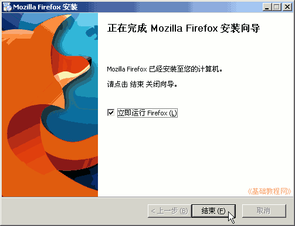
9）首先出来一个导入IE数据的，选择“不导入”，点“下一步”继续；
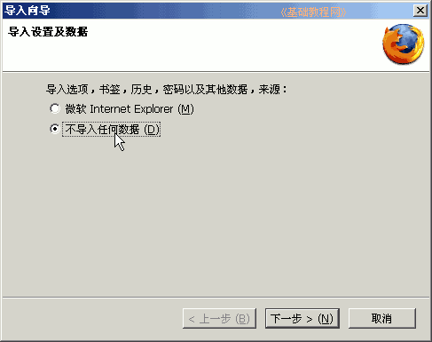
10）启动成功以后，在标签里显示Mozilla的欢迎和起始页，有一行提示单击标签的关闭按钮；
11）以后每次用可以在桌面上点击Firefox的图标，默认主页为Mozilla页面，在“工具－选项”中也可以改成自己的，后面我们会学到；
本节学习了下载和安装Firefox的基本操作，如果你成功地完成了练习，请继续学习下一课内容；
本教程由86团学校TeliuTe制作|著作权所有
基础教程网：http://teliute.org
美丽的校园……
转载和引用本站内容，请保留版权信息和本站链接。